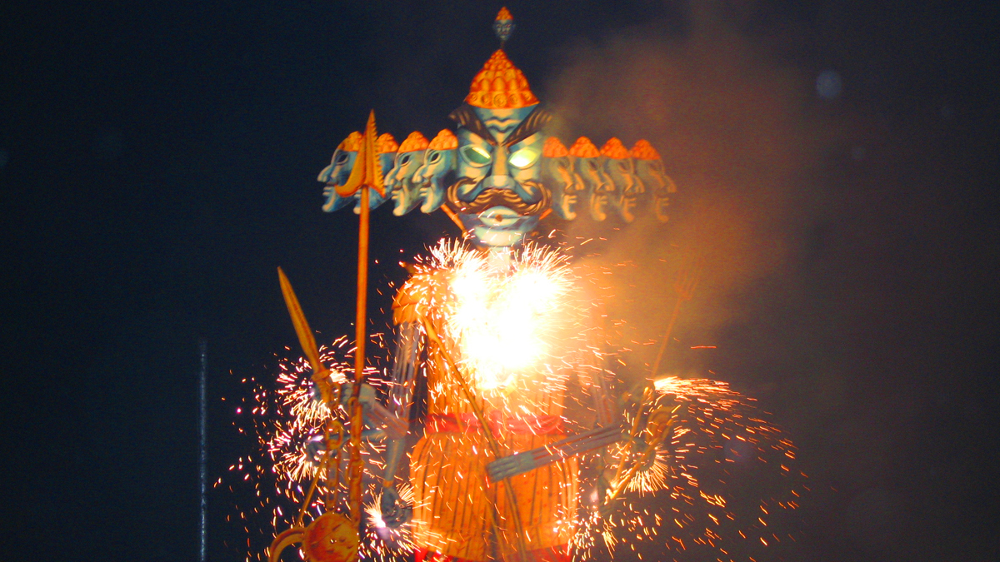

Dussehra, also known as Vijayadashami, is one of the most significant Hindu festivals celebrated across India. The name ‘Dussehra’ is derived from Sanskrit words “Dasha” (ten) and “Hara” (defeat), symbolizing the victory of Lord Rama over the demon king Ravana, who had ten heads. It marks the end of the nine-day festival of Navratri and celebrates the triumph of good over evil.
Dussehra also commemorates Goddess Durga’s victory over the buffalo demon Mahishasura in eastern parts of India, especially West Bengal. The roots of Dussehra celebrations are traced back to ancient times and have been recorded in epics like the Ramayana and Devi Mahatmya. The day is traditionally marked as the time when kings and warriors initiated military campaigns, believing it to be auspicious.
Dussehra is not just a festival of celebrations, but a spiritual reminder that righteousness (dharma) ultimately triumphs over evil (adharma). It encourages self-reflection, truth, and the courage to destroy inner demons such as ego, anger, and greed. On this day, people worship weapons, tools, and vehicles in a ritual known as Ayudha Puja, seeking divine blessings.
In many states, effigies of Ravana, Meghnath, and Kumbhakarna are burnt with fireworks and cheers of “Jai Shri Ram,” recreating the scene of victory and liberation. The event brings communities together and promotes cultural unity through folk plays, dance-dramas like Ramlila, and traditional storytelling.
Dussehra rituals vary across regions. In North India, Ramlila performances lead up to the grand finale of Ravana Dahan. In South India, homes showcase the Golu dolls and worship is done through Ayudha Puja. In West Bengal, the last day of Durga Puja coincides with Dussehra, where the idol immersion marks the departure of Goddess Durga to her heavenly abode.
Dussehra is celebrated with great enthusiasm across India. In Delhi and Uttar Pradesh, grand Ramlila performances are staged with Ravana effigy burnings. In Mysore, Karnataka, the royal procession known as Jumbo Savari features decorated elephants and cultural pageantry. Kullu Dussehra in Himachal Pradesh involves bringing deities from different temples in a grand fair. In West Bengal, it coincides with Vijaya Dashami marking the end of Durga Puja. The festival also holds cultural significance in Nepal, Bangladesh, and Sri Lanka.